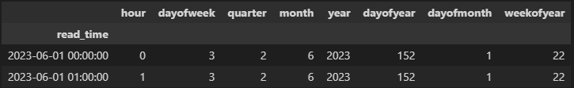
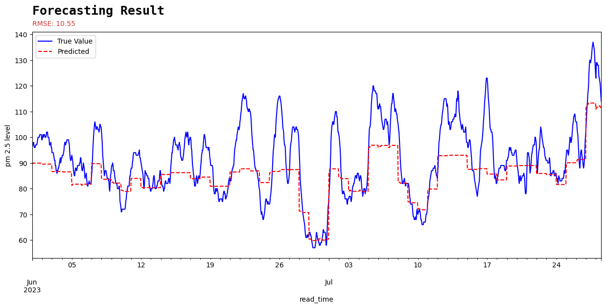
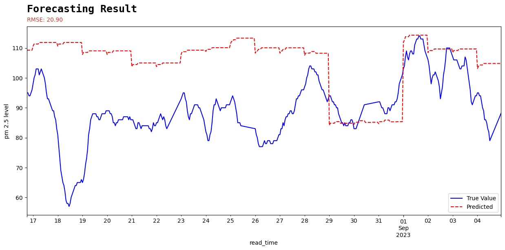
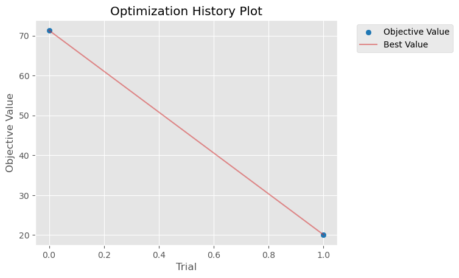
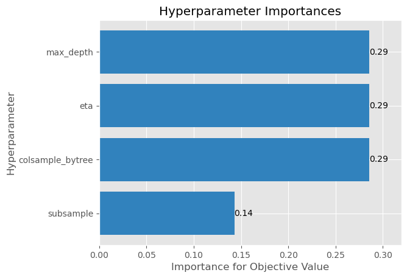

Many people say machine learning is half art half science. To me, experimentation has the sense of art in it. In that we need to find the best configuration of values to create the most optimized model for our case.
For python, there are tools and library to make the process less tedious and troublesome, to make the result more explainable and accessible.
Before I blabber some more unnecessary words, let's see what are they.
Let's start by looking at the completed minimally reproducible example (MRE). Well, not really an MRE because it requires some other function which I don't include here, but it is what it is...
This is not even my final form
This is my MRE version, only including the training experiment part, left out the data preparation. We will dissect this script part by part, even back in time to see the simpler version of it then walk step by step until we reach this form again.
# env setting for mlflow within dagshub
os.environ['MLFLOW_TRACKING_USERNAME'] = secrets['MLFLOW_TRACKING_USERNAME']
os.environ['MLFLOW_TRACKING_PASSWORD'] = secrets['MLFLOW_TRACKING_PASSWORD']
os.environ['MLFLOW_TRACKING_URI'] = secrets['MLFLOW_TRACKING_URI']
# creating new experiment
experiment_name = "xgboost_optuna_test"
# Check if the experiment exists, and if not, create it
if not mlflow.get_experiment_by_name(experiment_name):
mlflow.create_experiment(experiment_name)
experiment_id = mlflow.get_experiment_by_name(experiment_name).experiment_id
# Define an optuna objective function to be minimized.
@mlflc.track_in_mlflow() # add an optuna decorator for additional logging in mlflow
def objective(trial):
param = {
'objective': 'reg:squarederror',
'max_depth': trial.suggest_int('max_depth', 3, 10),
'eta': trial.suggest_float('eta', 1e-4, 0.1),
'subsample': trial.suggest_float('subsample', 0.4, 0.8),
'eval_metric': 'rmse',
'lambda': trial.suggest_loguniform('lambda', 1e-8, 1.0),
'alpha': trial.suggest_loguniform('alpha', 1e-8, 1.0),
}
# training pipeline
xgb_model, train_pred, train_rmse, val_pred, val_rmse, eval_result = xgb_engine.xgb_train(
train_x,
train_y,
val_x,
val_y,
param,
1000,
pruning_callbacks=None
)
# prediction and plotting pipeline using validation data
val_pred = xgb_engine.xgb_predict(xgb_model, val_x)
fig, ax = xgb_helper.xgb_predict_plot(
val_y,
val_pred
)
mlflow.log_figure(fig, "img/validation_plot.png") # log the plot to mlflow
plt.close() # close the plot to prevent it from showing
# obtain the results and prepare the plot
epochs = len(eval_result['train']['rmse']) # get the number of epoch in a trial
x_axis = range(0, epochs)
fig, ax = plt.subplots()
ax.plot(x_axis, eval_result['train']['rmse'], label='Train')
ax.plot(x_axis, eval_result['valid']['rmse'], label='Validation')
ax.legend()
plt.ylabel('RMSE')
plt.title('XGBoost RMSE by Epoch')
mlflow.log_figure(fig, "img/rmse_by_epoch.png") # log the plot to mlflow
plt.close()
# additional logging for eval result and training rmse
mlflow.log_dict(eval_result, "eval_result/eval_result.json")
mlflow.log_metric("train_rmse", train_rmse)
# return a metric of choice (to be used by the study later)
return val_rmse
# prepare the mlflow callback to be used by optuna
mlflc = MLflowCallback(
tracking_uri=secrets["MLFLOW_TRACKING_URI"],
metric_name="validation-rmse",
)
pruner = optuna.pruners.MedianPruner(n_warmup_steps=5) # use pruner to make the trials more efficient
# create the study object then optimize it (run the experiment)
study = optuna.create_study(study_name=experiment_name, pruner=pruner, direction="minimize")
study.optimize(objective, n_trials=2, callbacks=[mlflc])
# plot the result of the whole study
optim_history = optuna.visualization.matplotlib.plot_optimization_history(study)
importance_plot = optuna.visualization.matplotlib.plot_param_importances(study)My name is…
Before we dig deeper into the code, let me briefly mention the main tools that we are going to use. This is by any means not a proper introduction of the tools, but rather my interpretation of the tools and how they are helpful in my case.
MLflow
In my previous post, I've mention how MLflow help me to do experimentation monitoring/tracking, we are going to do the same in this post.
MLflow runs by creating an experiment, I like to imagine this as
a folder. Then inside an experiment we can make multiple
runs. A run can also be seen as a subfolder, in
which the information about a single training will be stored, as a "file" if
you will. This information or "file" can be in form of:
- Parameters used — this is basically the hyperparameter that we want to tweak and find the most optimum one for our case
- Metrics yielded — variables of our choosing to decide which model performs the best
- Model — this one is kind of obvious
-
Artifacts — as far as I understand, this can be any file
or directory. So far I've stored:
- image
- record of metrics as a
jsonfile
Dagshub
Dagshub is github on steroid, for data scientist.
In my case however, I use dagshub mainly to access the mlflow ui
because one time the local ui didn't work on my laptop. ¯\_(ツ)_/¯
I keep using dagshub in case I want to "expand" my pipeline to include DVC for data and model versioning and registry. Or use its other features like data engine, data annotation, and storage.
Optuna
Experimentation especially in machine learning, is basically throwing some numbers as hyperparameters to our model, then see how it performs. To my understanding there are at least 2 methods to do it
- Random search
- Grid search
I never tried random search, because just by the name I found it stupid. Like, why do it randomly?? I imagine I have to define the space first, then it will search in uniformly distributed manner for the hyperparameters throughout the space. I could be totally wrong though, I never read about it nor tried it.
As opposed to random, in grid search we first define the list of hyperparameters along with its values. Then computes every possible combination of the hyperparameters and its values
Now, Optuna's default sampler (a way to search for the hyperparameters) is Tree-structured Parzed Estimater (TPE) [source]. This is a form of Bayesian optimization framework. When "Bayesian" is in the house, that usually means the ability to learn from the past. So TPE is kind of random, but not so random.
Optuna uses a concept of study, trial, and objective (this last one is my addition), as follows:
trial: a single execution of the objective functionstudy: optimization based on an objective function-
objectivefunction: a function that returns a value which will be optimized
The MRE
Here is the pseudocode of what we are trying to achieve
-
Data preparation
- Null value analysis — and how to deal with it
- Time series data splitting — training, validation, and test
- Turn it into time series forecasting form
-
Model training pipeline
- Prepare the hyperparameters
- Calculate the metrics
- Visualize the result
-
Inferencing pipeline
- Predict on an unseen dataset
- Calculate the metrics
- Visualize the result
Doing trial and error in jupyter notebook can get very messy very quickly, that is why I like to modularize whenever I can. By modularize I mean turning some of the script into classes or functions that are reusable to make the notebook looks cleaner.
In the script below I'll be calling my custom functions and include them where I think necessary. To make the post more concise, I'll not show every single one of them, and maybe show the glimpse of some of them.
Data preparation
I'll skip the null value analysis part to make it quicker to the main part of this post.
Time series data splitting.
def xgb_time_train_test_split(
all_data:pd.DataFrame,
train_frac:float,
val_frac:float,
test_frac:float
):
"""split the time series data into training, validation, and test data based on
user inputted fractions
Args:
all_data (pd.DataFrame): the whole dataframe to be splitted
train_frac (float): fraction of training data
val_frac (float): fraction of validation data
test_frac (float): fraction of test data
Returns:
_type_: training, validation, (and test) dataframe
"""
# code here
# Define the proportions for train, validation, and test sets
train_frac = 0.6 # 60% of the data for training
val_frac = 0.2 # 20% for validation
test_frac = 0.2 # 20% for testing
df_train, df_val, df_test = xgb_time_train_test_split(
filtered_df,
train_frac,
val_frac,
test_frac
)Turn the data into time series forecasting form.
def create_features(
df: pd.DataFrame,
target_variable: str
):
"""Creates time series features from datetime index
Args:
df (pd.DataFrame): the dataframe which contains datetime column to be turned
into time series forecasting features and target
target_variable (str): the target variable name
Returns:
X (int): Extracted values from datetime index, dataframe
y (int): Values of target variable, numpy array of integers
"""
df['date'] = df.index
df['hour'] = df['date'].dt.hour
df['dayofweek'] = df['date'].dt.dayofweek
df['quarter'] = df['date'].dt.quarter
df['month'] = df['date'].dt.month
df['year'] = df['date'].dt.year
df['dayofyear'] = df['date'].dt.dayofyear
df['dayofmonth'] = df['date'].dt.day
df['weekofyear'] = df['date'].dt.isocalendar().week.astype('int32')
X = df[['hour','dayofweek','quarter','month','year',
'dayofyear','dayofmonth','weekofyear']]
if target_variable:
y = df[target_variable]
return X, y
return X
target_name = "your_target_here"
train_x, train_y = create_features(df_train, target_variable=target_name)
val_x, val_y = create_features(df_val, target_variable=target_name)
test_x, test_y = create_features(df_test, target_variable=target_name)After executing these lines, we will be having 3 dataframe for training, validation, and test that is ready to be trained with xgboost model in a time series forecasting use case. Besides that, we will also have 3 target series, one each. The preview should look like this.

Model training pipeline
By default, the xgboost model will have a default set of parameters to be
used by the model. In this case we are going to define some of them before
hand. Then we will also use a data format specific called DMatrix
to be called within the xgb python API, we will convert our Pandas DataFrame
to it by calling xgb.DMatrix().
# define some of the hyperparameters and its value
param = {
'max_depth': 3,
'eta': 0.05,
'objective': 'reg:squarederror',
'subsample': 0.6,
'colsample_bytree': 0.8,
}
# Convert the datasets into DMatrix
dtrain = xgb.DMatrix(train_x, label=train_y)
dval = xgb.DMatrix(val_x, label=val_y)
# training pipeline
num_round = 100 # number of epoch
xgb_model = xgb.train(
param, dtrain, num_round,
verbose_eval=False,
)
After we created the model (xgb_model), we can use it to make a
prediction both on training data and validation data to check its final RMSE
and to plot it to be compared with the actual values
# Predict the target for the training set
train_pred = xgb_model.predict(dtrain)
# Predict the target for the val set
val_pred = xgb_model.predict(dval)
# y_pred_real = lagged_df.lagged_value * np.exp(pred_df.Predicted)
train_rmse = np.sqrt(metrics.mean_squared_error(train_y, train_pred))
val_rmse = np.sqrt(metrics.mean_squared_error(val_y, val_pred))Plotting the training pred will give you something like this

Inferencing pipeline
Inferencing is just as easy as converting dataframe to DMatrix, then call the prediction method from the trained model
data = xgb.DMatrix(test_x)
test_pred = xgb_model.predict(data)Then plot it

That's it! The minimally working training pipeline. That is our focus right now instead of the model performance itself, because we are going to feed this pipeline into mlflow and optuna later.
Experiment Tracking
This one should be short, because we only need to connect to our dagshub uri and put some additional logging.
To prevent others looking at my credentials, I put my dagshub credentials in a json file inside a secret folder (yes, it's a folder named "secret"). This secret folder also added to the .gitignore file to make sure it only exist on my local machine.
If you don't know where to find the credentials, check it in my previous post about PyTorch experimentation.
with open(secret_dir/"mlflow_dagshub.json", "r") as f:
secrets = json.load(f)
# env setting for mlflow within dagshub
os.environ['MLFLOW_TRACKING_USERNAME'] = secrets['MLFLOW_TRACKING_USERNAME']
os.environ['MLFLOW_TRACKING_PASSWORD'] = secrets['MLFLOW_TRACKING_PASSWORD']
os.environ['MLFLOW_TRACKING_URI'] = secrets['MLFLOW_TRACKING_URI']Then read the json file that contains the credentials as a dictionary.
The os.environ thingy ensures that the os env is set according
to its variable using the values from my secrets dictionary.
After that, we can start creating a new experiment to be tracked in mlflow.
Since we already set the os.environ, this experiment
automatically will be stored in the dagshub uri.
experiment_name = "xgboost_optuna_test"
# Check if the experiment exists, and if not, create it
if not mlflow.get_experiment_by_name(experiment_name):
mlflow.create_experiment(experiment_name)
experiment_id = mlflow.get_experiment_by_name(experiment_name).experiment_idThat's it for now, the additional logging will come later in the enhanced experiment part.
Hyperparameter Optimization
Now come the Optuna part. As mentioned earlier, we need to make a trial and a study.
First, we have to turn our training and prediction pipeline into a function
called objective, which I think is the trial object.
# Define an optuna objective function to be minimized.
def objective(trial):
param = {
'eval_metric': 'rmse',
'objective': trial.suggest_categorical('objective', 'reg:squarederror', 'reg:absoluteerror'),
'max_depth': trial.suggest_int('max_depth', 1, 100),
'eta': trial.suggest_float('eta', 1e-4, 1e-1),
}
# Convert the datasets into DMatrix
dtrain = xgb.DMatrix(train_x, label=train_y)
dval = xgb.DMatrix(val_x, label=val_y)
# training pipeline
num_round = 100 # number of epoch
xgb_model = xgb.train(
param, dtrain, num_round,
verbose_eval=False,
)
# return a metric of choice (to be used by the study later)
return val_rmseThen create a study to find the most optimized hyperparameters.
pruner = optuna.pruners.MedianPruner(n_warmup_steps=5)
study = optuna.create_study(study_name=experiment_name, pruner=pruner, direction="minimize")
study.optimize(objective, n_trials=2)Here is what I understand
-
The
objectivefunction which is a trial, will return a metric, in this case validation rmse. Thestudyuses it as an evaluation metric, deciding whether the previous trial perform worse or better than the next one. In this case, we set thedirection="minimize", meaning that the study will say a trial is better if the validation rmse is lower than the previous one. -
Then we call the
study.optimize()using our custom functionobjective, and define how many trials we are going to try. In this case, since we are just trying out the syntax, we choose 2 so we don't waste so much time. Just to see is it working or not.
From this study, we can also see some interesting plot as an effort to make an explainable model.
optim_history = optuna.visualization.matplotlib.plot_optimization_history(study)
importance_plot = optuna.visualization.matplotlib.plot_param_importances(study)

Which gives us the plot above. The optimization history plot is just a line because it only runs for 2 trials. It should look like the loss plot in deep learning use case if we traing for long enough trials.
Enhanced Experiment
Training Pipeline
First we are going to improve the training pipeline by including
evals and evals_result. These 2 will be used as an
additional logging to mlflow. The modified part is inside the
objective function.
# training pipeline
evals_result = {} # prepare a dictionary to capture the evaluation result per epoch
num_round = 100 # number of epoch
watch_list = [(dtrain, 'train'), (dval, 'valid')]
xgb_model = xgb.train(
param, dtrain, num_round,
evals=watch_list,
early_stopping_rounds=20,
verbose_eval=False,
evals_result=evals_result
)
in case you want to see the evals_result, you are
required to define the evals variables
I'm not really sure if this is true, but in case you want to see the
evals_result, you are required to define the evals
variables. The record of the evals_result will depends on:
-
objectiveinsideparam
Since we are usingreg:squarederror,evals_resultwill record the squared error from each epoch. -
Value of
evalsinxgb.train, in this casewatch_list.
Since it hasdtrain(aliased with 'train') anddval(aliased with 'valid') we will be recording the squared error from both training and validation data. -
We use
early_stopping_roundsin case a trial is not better after several epoch, so it will stop early before reaching the complete epoch (num_round), hence saving our resources.
Correct me if I'm wrong.
In addition to the added line in the training pipeline, I also modularize the training, inferencing, and plotting part.
Additional logging
MLflow and XGBoost integration allows autologging, to make the logging easier. But we want to add some more things to track, hence the additional logging.
To add some more logging, we will modify the optuna objective
function because that is basically our experimentation logging pipeline. We
will add some more line after the training pipeline and before
return
# xgb_model = xgb.train(....
# prediction and plotting pipeline using validation data
val_pred = xgb_model.predict(dval)
fig, ax = xgb_predict_plot( # this is a custom plotting function
val_y,
val_pred
)
mlflow.log_figure(fig, "img/validation_plot.png") # log the plot to mlflow
plt.close() # close the plot to prevent it from showing
By adding this line, we plot the prediction against the true value, the
custom plotting function will gives a matplotlib Figure and
Axes objects. We will use the the Figure object to
be logged by mlflow.log_figure then decide where in that
specific run the figure will be stored. So within a
run there will be a subfolder called img which
contains validation_plot.png. Then we call
plt.close() to prevent the image from showing in our notebook.
I also interested to see how the trials went by looking at the training and validation rmse progression along the epoch of each trials. Right after the script above, I added some more logging.
# obtain the results and prepare the plot
epochs = len(evals_result['train']['rmse']) # get the number of epoch in a trial
x_axis = range(0, epochs)
fig, ax = plt.subplots()
ax.plot(x_axis, evals_result['train']['rmse'], label='Train')
ax.plot(x_axis, evals_result['valid']['rmse'], label='Validation')
ax.legend()
plt.ylabel('RMSE')
plt.title('XGBoost RMSE by Epoch')
mlflow.log_figure(fig, "img/rmse_by_epoch.png") # log the plot to mlflow
plt.close()
# additional logging for eval result and training rmse
mlflow.log_dict(evals_result, "eval_result/eval_result.json")
mlflow.log_metric("train_rmse", train_rmse)
Remember the evals_result we added to the training pipeline
previously? Here is where we use it. In addition to directly log the
evals_result to mlflow, I also make the plot of the progression then log it
to mlflow. Then the last line is to also log the train_rmse,
since the objective function return only val_rmse,
the autologger only record this as our metrics, that is why we need to log
the train_rmse manually to mlflow.
Connect optuna to mlflow
To connect optuna to mlflow, we need to add some more lines before calling
the objective function in our study. According to
optuna documentation, one way to connect optuna to mlflow is to add a
decorator before the objective function.
@mlflc.track_in_mlflow() # added mlflow decorator
def objective(trial):
# code here ....
# create mlflow callback
mlflc = optuna.integration.mlflow.MLflowCallback(
tracking_uri=secrets["MLFLOW_TRACKING_URI"],
metric_name="validation-rmse",
)
pruner = optuna.pruners.MedianPruner(n_warmup_steps=5)
study = optuna.create_study(study_name=experiment_name, pruner=pruner, direction="minimize")
study.optimize(objective, n_trials=2, callbacks=[mlflc]) # add the mlflow callbackClosing remarks
That's that!
After modularizing some of the functions, we will be back to the final form in the beginning of this post!
Next, I'll try to use this concept on PyTorch-Lightning to train a deep learning model, and maybe add DVC to track the data and model.
See ya when I see ya!